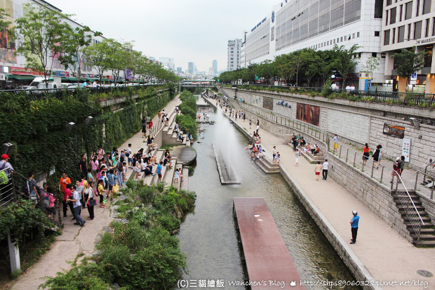

清溪川（청계천）自仁王山為起點向東穿過韓國首爾市中心，總長約13.7公里的人工河流（在首爾市區部份約5.8公里）。在朝鮮時代為解決雨季積水無法排出市區而挖掘，過去曾作為下水道使用，2005年改造轉型為國際知名觀光景點。清溪川為漢江第二大支流，在城東區的沙斤洞、松亭洞、聖水洞與第一大支流中浪川匯流後進入漢江。
整建前清溪高架道路四周溫度高於首爾全市平均氣溫5℃以上；現在則低於全市平均氣溫3.6℃，有效調節都市高溫；平均風速比往年同期快了50％左右，空氣潔淨度明顯提升；清溪川與中浪川交匯處的楊柳濕地現被指定為白鷺、野鴨、翠鳥等鳥類保護區，水中生物有魚類、兩棲類多樣性生物，水生植物有溪柳、荊三棱、菖蒲等，沿岸可見狼尾草、紫芒等植物。
|  | ||
夜晚的清溪川 |
清溪川整治當時 |
清溪川的某段 |